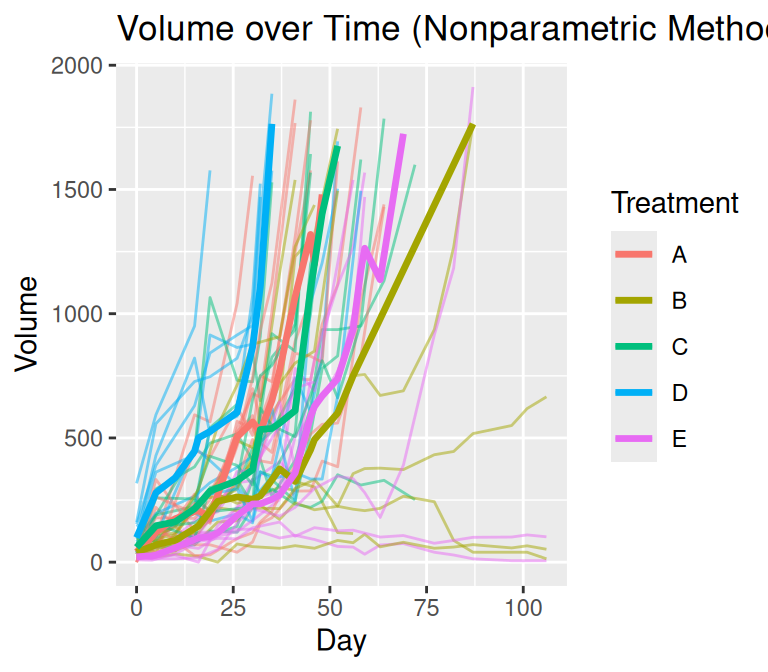

In this guide, we demonstrate the core functionality of the tumr package using the melanoma2 dataset included with the package. All code required to reproduce the examples is provided below.
Loading the Data
A Naive Mean-Based Visualization
Before introducing tumr functionality, we first construct a simple plotting function to illustrate a common pitfall in tumor growth visualization.
Code for plot_mean()
Code
plot_mean <- function(data, group, time, measure, id, stat = median, remove_na = FALSE){
data_summary <- data |>
dplyr::group_by({{group}}, {{time}}) |>
dplyr::summarise(measure = stat({{measure}}, na.rm = remove_na), .groups = "drop_last") |>
dplyr::ungroup()
if (remove_na == TRUE) {
data_full <- data |>
na.omit(data)
} else {
data_full <- data
}
ggplot2::ggplot() +
ggplot2::geom_line(data = data_full,
ggplot2::aes(x = {{time}},
y = {{measure}},
group = {{id}},
color = {{group}}),
alpha = 0.5) +
ggplot2::geom_line(data = data_summary,
ggplot2::aes(x = {{time}},
y = measure,
color = {{group}}),
linewidth = 1.2) +
ggplot2::labs(
y = "Volume",
title = "Volume over Time"
)
}Note: plot_mean() is not part of the tumr package. It is defined here solely to provide a baseline visualization for comparison with tumr’s methods.
Creating a tumr Object
Most tumr functions operate on a tumr object, which stores both the data and its associated metadata (subject ID, time, outcome, and grouping variable).
To create a tumr object, use the tumr() function:
mel2 <- tumr(melanoma2, ID, Day, Volume, Treatment)This object can now be passed directly into other tumr functions.
Visualizing Tumor Growth
The figure below compares a naive longitudinal visualization with a tumr-based approach that explicitly accounts for censoring and missing observations.
plot_mean(melanoma2, Treatment, Day, Volume, ID, stat = mean)
plot_median(mel2)

The plot on the left uses a straightforward summary of observed data at each time point. This approach ignores the structure of missingness common in tumor growth studies, where subjects frequently leave the study due to censoring or dropout. As a result, the apparent decline in tumor volume over time is an artifact of estimating summaries from a progressively smaller subset of subjects rather than a true biological effect.
The visualization produced by plot_median() addresses these issues through an explicit preprocessing step designed for longitudinal tumor data.
Before any summary statistic is computed, the function:
- Aligns time points across subjects Rows are added for unobserved time points so that all subjects share a common time grid.
- Handles trailing missing values due to censoring The last observed value is carried forward and marked with a “+” to indicate right-censoring.
- Example: 3, 6, 9, NA → 3, 6, 9, 9+
- Interpolates embedded missing values Missing observations that occur between recorded time points are interpolated to preserve trajectory continuity.
After preprocessing, tumor volume summaries are computed at each time point within each treatment group using a Kaplan–Meier–based approach. This strategy ensures that summaries reflect both observed data and informative missingness, producing a visualization that more accurately represents tumor growth dynamics over time.
Response feature analysis
One of the primary analysis tools in tumr is the rfeat() function, which implements response feature analysis. This two-stage approach simplifies complex longitudinal data by extracting a single interpretable summary measure per subject.
Specifically, rfeat():
Computes a growth slope (beta coefficient) for each subject
Averages these slopes within each treatment group
-
Compares group-level summaries using one of the following methods:
- t-test
- ANOVA
- Tukey post-hoc test
- Both ANOVA and Tukey post-hoc tests
The example below uses comparison = “both” to perform ANOVA followed by Tukey post-hoc comparisons.
(rfeat_mel2 <- rfeat(mel2, comparison = "both"))$anova
Df Sum Sq Mean Sq F value Pr(>F)
Group 4 0.008424 0.0021061 2.938 0.0314 *
Residuals 42 0.030106 0.0007168
---
Signif. codes: 0 '***' 0.001 '**' 0.01 '*' 0.05 '.' 0.1 ' ' 1
$tukey
Tukey multiple comparisons of means
95% family-wise confidence level
Fit: aov(formula = Beta ~ Group, data = betas)
$Group
diff lwr upr p adj
B-A -0.039562710 -0.07461937 -0.004506050 0.0200139
C-A -0.027355317 -0.06147696 0.006766330 0.1701000
D-A -0.023685320 -0.05780697 0.010436327 0.2941216
E-A -0.030852007 -0.06704348 0.005339465 0.1274422
C-B 0.012207393 -0.02284927 0.047264052 0.8572838
D-B 0.015877390 -0.01917927 0.050934049 0.6982531
E-B 0.008710703 -0.02836362 0.045785023 0.9618601
D-C 0.003669997 -0.03045165 0.037791644 0.9980027
E-C -0.003496690 -0.03968816 0.032694782 0.9986875
E-D -0.007166687 -0.04335816 0.029024785 0.9794890Plotting Response Feature Results
The plot() method for rfeat objects displays both the individual subject slopes and the group-level means.
plot(rfeat_mel2)
Linear mixed model
The tumr package also includes lmm(), which fits a linear mixed effects model to tumor growth data. Linear mixed models are well suited for longitudinal data because they account for:
- Fixed effects: population-level effects of interest (e.g., treatment, time)
- Random effects: subject-specific variability that induces correlation among repeated measurements
By default, lmm() fits the model:
log1p(measure) ~ group * time + (time | id)
This specification allows each subject to have their own growth trajectory while estimating overall treatment effects. The model formula can be customized if desired.
(lmm_mel2 <- lmm(mel2))Warning in checkConv(attr(opt, "derivs"), opt$par, ctrl = control$checkConv, : Model failed to converge with max|grad| = 0.00566844 (tol = 0.002, component 1)
See ?lme4::convergence and ?lme4::troubleshooting.Linear mixed model fit by REML. t-tests use Satterthwaite's method [
lmerModLmerTest]
Formula: log1p(Volume) ~ Treatment * Day + (Day | ID)
Data: data
REML criterion at convergence: 1216.5
Scaled residuals:
Min 1Q Median 3Q Max
-6.8683 -0.3590 0.0569 0.4891 4.0759
Random effects:
Groups Name Variance Std.Dev. Corr
ID (Intercept) 0.3909753 0.62528
Day 0.0006511 0.02552 -0.51
Residual 0.3220706 0.56751
Number of obs: 568, groups: ID, 47
Fixed effects:
Estimate Std. Error df t value Pr(>|t|)
(Intercept) 3.66092 0.22688 46.83127 16.136 < 2e-16 ***
TreatmentB 0.53834 0.32255 42.89746 1.669 0.10240
TreatmentC 0.78053 0.31957 46.08359 2.442 0.01848 *
TreatmentD 1.33290 0.32410 48.71755 4.113 0.00015 ***
TreatmentE -0.14693 0.33197 42.42209 -0.443 0.66031
Day 0.07971 0.00897 47.89633 8.886 1.06e-11 ***
TreatmentB:Day -0.03972 0.01269 43.36203 -3.130 0.00312 **
TreatmentC:Day -0.02673 0.01255 46.24553 -2.129 0.03859 *
TreatmentD:Day -0.02497 0.01321 54.20921 -1.890 0.06410 .
TreatmentE:Day -0.03060 0.01300 42.19464 -2.355 0.02325 *
---
Signif. codes: 0 '***' 0.001 '**' 0.01 '*' 0.05 '.' 0.1 ' ' 1
Correlation of Fixed Effects:
(Intr) TrtmnB TrtmnC TrtmnD TrtmnE Day TrtB:D TrtC:D TrtD:D
TreatmentB -0.703
TreatmentC -0.710 0.499
TreatmentD -0.700 0.492 0.497
TreatmentE -0.683 0.481 0.485 0.478
Day -0.577 0.406 0.410 0.404 0.394
TretmntB:Dy 0.408 -0.560 -0.290 -0.286 -0.279 -0.707
TretmntC:Dy 0.412 -0.290 -0.573 -0.289 -0.282 -0.715 0.505
TretmntD:Dy 0.392 -0.276 -0.278 -0.585 -0.268 -0.679 0.480 0.485
TretmntE:Dy 0.398 -0.280 -0.283 -0.279 -0.556 -0.690 0.488 0.493 0.469
optimizer (nloptwrap) convergence code: 0 (OK)
Model failed to converge with max|grad| = 0.00566844 (tol = 0.002, component 1)
See ?lme4::convergence and ?lme4::troubleshooting.Note: You may see a convergence warning when fitting this model. If this occurs, see the Troubleshooting article for guidance.
Summarizing Linear Mixed Model Results
The summary() method for lmm objects uses the emmeans package to report:
- The overall effect of time
- Treatment-specific slopes over time
- Statistical tests comparing slope differences between groups
summary(lmm_mel2)$`overall effect of time`
1 Day.trend SE df lower.CL upper.CL
overall 0.0553 0.00411 41.3 0.047 0.0636
Results are averaged over the levels of: Treatment
Degrees-of-freedom method: kenward-roger
Confidence level used: 0.95
$`slope of treatment over time`
Treatment Day.trend SE df lower.CL upper.CL
A 0.0797 0.00898 43.6 0.0616 0.0978
B 0.0400 0.00898 35.8 0.0218 0.0582
C 0.0530 0.00879 40.6 0.0352 0.0707
D 0.0547 0.00972 55.4 0.0353 0.0742
E 0.0491 0.00941 34.4 0.0300 0.0682
Degrees-of-freedom method: kenward-roger
Confidence level used: 0.95
$`test slope differences`
contrast estimate SE df t.ratio p.value
A - B 0.03972 0.0127 39.4 3.128 0.0258
A - C 0.02673 0.0126 42.1 2.128 0.2277
A - D 0.02497 0.0132 49.4 1.887 0.3378
A - E 0.03060 0.0130 38.4 2.354 0.1505
B - C -0.01300 0.0126 38.0 -1.034 0.8378
B - D -0.01476 0.0132 44.8 -1.115 0.7977
B - E -0.00912 0.0130 35.0 -0.701 0.9548
C - D -0.00176 0.0131 47.9 -0.134 0.9999
C - E 0.00388 0.0129 37.0 0.301 0.9981
D - E 0.00564 0.0135 43.4 0.417 0.9934
Degrees-of-freedom method: kenward-roger
P value adjustment: tukey method for comparing a family of 5 estimates Plotting Linear Mixed Model Results
Finally, tumr provides a plot() method for lmm objects that produces two visualizations:
- Predicted tumor growth trajectories over time
- Estimated mean growth slopes for each group with confidence intervals
plot(lmm_mel2)Model has log1p-transformed response. Back-transforming predictions to
original response scale. Standard errors are still on the transformed
scale.$predicted_measure
$mean_betas